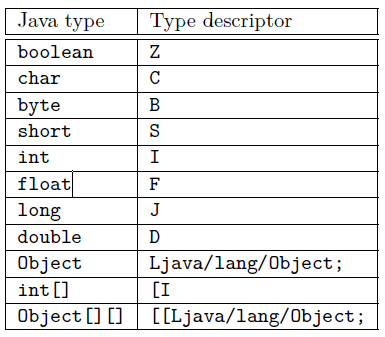
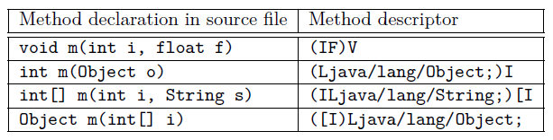

Java ASM 库使用及 AOP 示例
ASM 是一个用来操纵字节码的框架，能被用来动态生成类或者增强现有类的功能。
类型描述符和方法描述符
在使用 asm 库前需要对类型描述符和方法描述符有所了解，下面仅给出官方文档中的一个描述符的例子，这方面更具体的内容参考 这篇文章


基本使用
一般使用流程是，ClassReader 负责遍历类，调用 ClassVisitor , ClassVisitor 中做一些处理，然后调用 ClassWriter.
打印类结构实例
public class ClassPrinter extends ClassVisitor { public ClassPrinter() { super(Opcodes.ASM5); } @Override public void visit(int version, int access, String name, String signature, String superName, String[] interfaces) { System.out.println(name + " extends " + superName + " {"); } @Override public FieldVisitor visitField(int access, String name, String desc, String signature, Object value) { System.out.println(" "+desc+" "+ name+";"); return null; } @Override public MethodVisitor visitMethod(int access, String name, String desc, String signature, String[] exceptions) { System.out.println(" "+desc+" "+ name+";"); return null; } @Override public void visitEnd() { System.out.println("}"); } } public class Test { public static void main(String[] args) throws IOException { ClassPrinter printer = new ClassPrinter(); ClassReader cr = new ClassReader("java.lang.Runnable"); cr.accept(printer,0); } }ClassReader 通过 ClassLoader.getSystemResourceAsStream(name.replace(‘.’, ‘/‘) + “.class”) 获取类文件流，并读取到一个 byte 数组中。然后在 accept 中根据 byte 数组分析类结构，对结构的每一部分调用 ClassVisitor 的相应方法。
移除方法
public class ClassAdapter extends ClassVisitor { public ClassAdapter(ClassWriter cw) { super(Opcodes.ASM5,cw); } @Override public MethodVisitor visitMethod(int access, String name, String desc, String signature, String[] exceptions) { if("xxxx".equals(name)){ return null; } return super.visitMethod(access, name, desc, signature, exceptions); } } public class Test { public static void main(String[] args) throws IOException { ClassReader cr = new ClassReader("xxx"); ClassWriter cw = new ClassWriter(cr, 0); ClassVisitor cv = new ClassAdapter(cw); cr.accept(cv, 0); byte[] b = cw.toByteArray(); } }new ClassWriter(cr, 0) 的时候会调用 classReader.copyPool(this) 拷贝 classReader 读取的类的常量池中的内容到 classWriter 中。
ClassVisitor 持有 ClassWriter 的实例，每次在 accept 方法中被调用相关方法时都会转而去调用 ClassWriter 的相应方法，也就完成了内容写入。
在 ClassVisitor 的 visitMethod 方法中会调用 ClassWriter 的 visitMethod 方法，返回一个 MethodWriter 实例， ClassReader 转而调用 MethodWriter 完成方法内容的写入，如果我们不调用 ClassWriter 的 visitMethod 方法，直接返回一个 null 也就不会向 ClassWriter 中写入方法了，也就完成了方法的移除。
实例：AOP
首先定义一个默认拦截器，自定义拦截器可以继承默认拦截器覆盖相应方法。
public class Interceptor { public void preMethodExec( String name ){ return; } public void afterMethodExec( String name ){ return; } }定义 AopAdapter，继承 ClassVisitor 用于向类中添加字段，修改方法。
public class AopAdapter extends ClassVisitor { private Interceptor interceptor; private String clazzowner; private boolean isFieldPresent =false; public AopAdapter(ClassVisitor cv,String clazzowner) { super(Opcodes.ASM5, cv); this.clazzowner = clazzowner.replace('.','/'); } // 判断类中有没有 interceptor 字段 public FieldVisitor visitField(int access, String name, String desc, String signature, Object value) { if (name.equals("interceptor")) { isFieldPresent = true; } return super.visitField(access, name, desc, signature, value); } // 如果类中没有 interceptor 字段，则向 ClassWriter 中添加 interceptor 字段。 public void visitEnd() { if (!isFieldPresent) { FieldVisitor fv = cv.visitField(Opcodes.ACC_PUBLIC , "interceptor", "Lcom/acyouzi/asm/Interceptor;", null, null); if (fv != null) { fv.visitEnd(); } } isFieldPresent = false; cv.visitEnd(); } // 包装 MethodWriter 对方法做处理。 public MethodVisitor visitMethod(int access, String name, String desc, String signature, String[] exceptions) { MethodVisitor mv = super.visitMethod(access, name, desc, signature, exceptions); if ( (! "<init>".equals(name)) && (!"<clinit>".equals(name)) ) { return new MethodAdapter(mv,name,clazzowner); } return mv; } }定义 MethodAdapter 实现对方法的一些操作(在调用方法的开头调用拦截器的 preMethodExec 方法, return 之前调用拦截器的 afterMethodExec)
public class MethodAdapter extends MethodVisitor { private String name; private String clazzowner; public MethodAdapter(MethodVisitor mv, String name, String clazzowner) { super(Opcodes.ASM5, mv); this.name = name; this.clazzowner = clazzowner; } public void visitCode() { super.visitCode(); mv.visitVarInsn(Opcodes.ALOAD,0); // desc 如果是对象末尾记得加分号 mv.visitFieldInsn(Opcodes.GETFIELD,clazzowner,"interceptor","Lcom/acyouzi/asm/Interceptor;"); mv.visitLdcInsn(name); mv.visitMethodInsn(Opcodes.INVOKEVIRTUAL,"com/acyouzi/asm/Interceptor","preMethodExec","(Ljava/lang/String;)V",false); } @Override public void visitInsn(int opcode) { // 172 - 177 也就是 IRETURN LRETURN FRETURN DRETURN ARETURN RETURN 这几种语句之前。 if (opcode >= Opcodes.IRETURN && opcode <= Opcodes.RETURN){ mv.visitVarInsn(Opcodes.ALOAD,0); mv.visitFieldInsn(Opcodes.GETFIELD,clazzowner,"interceptor","Lcom/acyouzi/asm/Interceptor;"); mv.visitLdcInsn(name); mv.visitMethodInsn(Opcodes.INVOKEVIRTUAL,"com/acyouzi/asm/Interceptor","afterMethodExec","(Ljava/lang/String;)V",false); } super.visitInsn(opcode); } }实现工厂方法，根据 factory.propertie 的配置，加载相应实现类，并且通过 asm 把 interceptor 示例注入进去。
public class AsmClassLoader { private Interceptor interceptor; private static Properties properties; static { try { properties = new Properties(); InputStream is = AsmClassLoader.class.getClassLoader().getResourceAsStream("factory.properties"); properties.load(is); is.close(); } catch (FileNotFoundException e) { e.printStackTrace(); } catch (IOException e) { e.printStackTrace(); } } public AsmClassLoader( Interceptor interceptor) { if( interceptor == null){ interceptor = new Interceptor(); } this.interceptor = interceptor; } public Object getInstance(Class name) throws Exception { String className = (String) properties.get(name.getName()); if (className == null) { throw new Exception("can not find interface impl :" + name); } ClassReader cr = new ClassReader(className); // ClassWriter.COMPUTE_MAXS 自动计算栈的大小 ClassWriter cw = new ClassWriter(cr,ClassWriter.COMPUTE_MAXS); cr.accept(new AopAdapter(cw,className), 0); byte[] b = cw.toByteArray(); Class clazz = new SimpleClassLoader().defineClass(className, b); Constructor con = clazz.getConstructor(); Object obj = con.newInstance(); Field field = clazz.getField("interceptor"); field.set(obj,interceptor); return obj; } }编写测试类及接口，拦截器实例
public interface People { String getName(); int getAge(); void setName( String name ); void setAge( int age ); } public class PeopleImpl implements People { private String name; private int age; public String getName() { return this.name; } public int getAge() { return this.age; } public void setName(String name) { this.name = name; } public void setAge(int age) { this.age = age; } } public class MyInterceptor extends Interceptor { @Override public void preMethodExec(String name) { System.out.println(name + " : start exec"); } @Override public void afterMethodExec(String name) { System.out.println(name + " : finish"); } }编写配置文件 factory.propertie
# factory.propertie com.acyouzi.asm.People=com.acyouzi.asm.PeopleImpl运行测试
public class Test { public static void main(String[] args) throws Exception { People people = (People) new AsmClassLoader(new MyInterceptor()).getInstance(People.class); people.setName("Acyouzi"); people.setAge(22); System.out.println(people.getName()+" : "+people.getAge()); } }
总结
asm 还有一种 Tree API, 好像用的不多(不太了解)，用 asm 修改方法代码时一定要小心，如果不能确定最好把要添加的逻辑用实际代码写出来，编译一下然后用 javap 命令查看一下编译器是怎么翻译的。另外最好在 new ClassWriter 的时候选择 ClassWriter.COMPUTE_MAXS , 这样会自动计算栈和本地变量表的大小，就不用自己去注意这部分内容了。